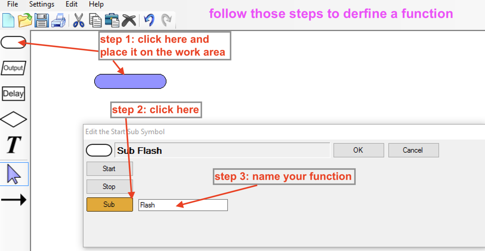

Flowing Flowcharts
Grey overlay
Pink
Green
Blue
Cream
Liliac
Purple
Yellow
1 Objectives
Developing Algorithms learning strand, specifically:
- develop problem solving skills by decomposition
- learn how to represent algorithms using flowchart
- Understand how abstraction can help solving complex problems
Developing Programming and Development learning strand, specifically:
- implement solutions using sequencing and repetition
- develop further understanding that programming bridges the gap between algorithmic solutions and computers
2 Sequencing
Learn It - Sequencing
- In the last lesson we looked at a program called Flowol that lets us use flowcharts to control and interact with situations called "mimics".
- Today we are going to use Flowol to create a sequence of instructions to solve certain problems.
- Computers follow instructions or sequences programmed into them. A flowchart can be used to help design a sequence. Actions can be ordered, reordered or removed if no longer necessary.
Task 1 - Zebra Crossing
- Copy this table by selecting it by clicking and dragging you mouse from the top left ot the bottom right.
- Paste it into a PowerPoint slide and fill in the order column from 1 to 10 in the order in which they should take place.
| Instruction | Order |
|---|---|
| Walk to the island looking both ways and listening | |
| Step onto the second half of the zebra crossing | |
| Stop at the island | |
| Step onto the first half of the zebra crossing | |
| Stop at the side of the road looking to the other side of the Zebra crossing | |
| Look right | |
| Look left | |
| Wait until traffic from the right has stopped or the road is clear | |
| Walk to the other side of the road looking both was and listening | |
| Stay on the island until traffic from the left has stopped or the road is clear |
- In the last lesson we looked at how to use structured English to describe specific steps to solve a problem.
- Sometimes, the problem is complex or seemingly complex. A common approach to solve a complex problem is to break down the problem into smaller, easier to solve problems. After we solved each of those smaller problems, the complex problem is solved.
- The above approach to problem solving is called divid-and-conquer.
- In computer science, to breaking down a problem into smaller, easier to solve problems is called decomposition.
- Let's try decomposition on the following not so complex problem:
Write a program such that when a user inputs a number, the program will output it is an even or an odd number.
- To break down the above problem, we are going to use flowchart to help us.
- Flowcharts are very useful in visualising how algorithms work.
3 Algorithms with Flowchart
Learn It - flowcharts
- A flowchart is a type of diagram that represents an algorithm, workflow or process, showing the steps as boxes of various kinds, and their order by connecting them with arrows.
- Each shape represent some steps in the algorithm:

- The following is a simple example of using flowchart to describe the steps to a simple problem of determing if an user's input numbers are odd or not.

- The above problem has been decomposed into three parts:
- a user input a number
- determine if the number is even or odd
- output the appropriate message depending on the above step
Try It
Write a computer game that allows a user to guess the number that is picked by a computer. If the user guessed the number, the user is declared a winner. If the user guessed incorrectly, the computer will tell the user if the guess is too high or two low.
- Try your decomposition skill with the above problem.
- The first few steps have been started for you:
- computer pick a number
- a user input a number
Badget It - Silver
Learning Strand: Algorithms
- Finish decomposing the problem by finishing all steps required to reach a solution.
- Create a flowchart using appropriate symbols for your steps.
- Upload both your steps and flowchart to www.bournetolearn.com
4 Solving a real life problem with flowchart
Learn It - the light house
- Launch the application flowol, click on File->New and you should see something like the following:

- Select the
lighthouse mimicby clicking on it - The scenario or mimic has one input:the Sun and three outputs: Lamp, Lights and Foghorn

Try It
- flowol is simple to use once you know it
- See if you can work out how to create a flowchart as shown below:

- If you stuck, ask your teacher to show you
Badge It - Gold
Learning Strand: Algorithms
- The above flowchart will make the three outputs flash on and off every two seconds
- Your task is to create a flowhcart so that:
- when the Sun is down(off), all the three outputs will flash
- when the Sun is up (on), if the Lights are not on, the Foghorn should be on, and if the Lights are on, the Foghorn should be off.
- Test your flowchart by clicking on the Sun to turn it on and off.
- Screenshot your working flowchart and upload to BTL
Badge It - Platinum
Learning Strand: Algorithms
- Now you are familar with how the software
flowolworks. - The above mimic has all three outputs flash on and off.
- follow the steps shown in the image below to create a flash function:

- Modify your flowchart from the Gold badge task to use this function.
- Test your flowchart as you have done with your Gold badge and upload the screenshot of your working flowchart to BTL.